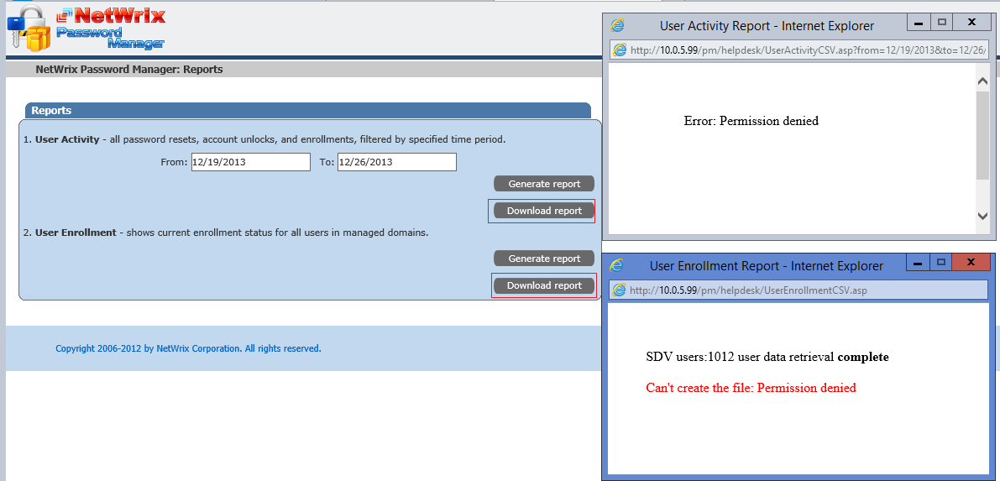

I recieve Error: Permissions denied or
Can't create the file: Permission denied when trying to download any report
from the Helpdesk portal

To make reports availalbe for downloading Password Manager generates reports and writes the output to a temp file. The temp file is located in the physical path of the helpdesk virtual directory - in the product installation directory. (by default C:Program Files (x86)Netwrix Password ManagerWeb). The reason for this is that the account used to authenticate to the Helpdesk portal (can be the one you are logged in to the system if automatic background user authentication is enabled) does not have Write permissions to the folder.
To resolve the issue you must grant the appropriate account Write NTFS permission to the Web folder (by default C:Program Files (x86)Netwrix Password ManagerWeb). To grant permission:
To make reports availalbe for downloading Password Manager generates reports and writes the output to a temp file. The temp file is located in the physical path of the helpdesk virtual directory - in the product installation directory. (by default C:Program Files (x86)Netwrix Password ManagerWeb). The reason for this is that the account used to authenticate to the Helpdesk portal (can be the one you are logged in to the system if automatic background user authentication is enabled) does not have Write permissions to the folder.
To resolve the issue you must grant the appropriate account Write NTFS permission to the Web folder (by default C:Program Files (x86)Netwrix Password ManagerWeb). To grant permission:
- Right-click the Web folder, go to Properties
- Select Security tab, click Edit
- Add the account and enable Write Allow checkbox
- Click Ok, then Ok again